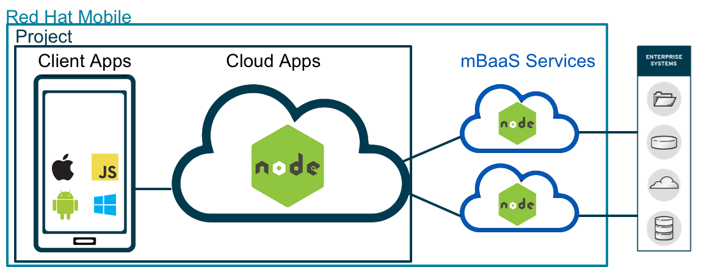
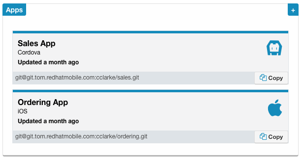
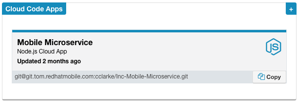
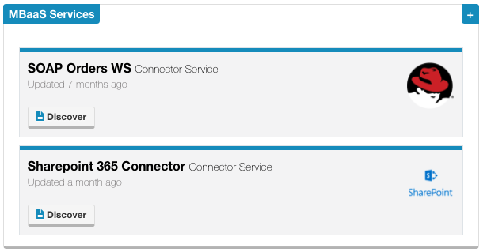
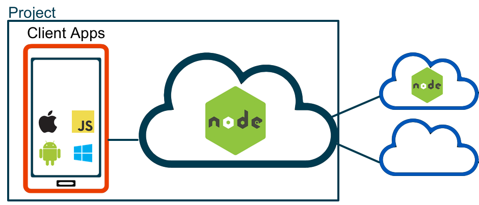
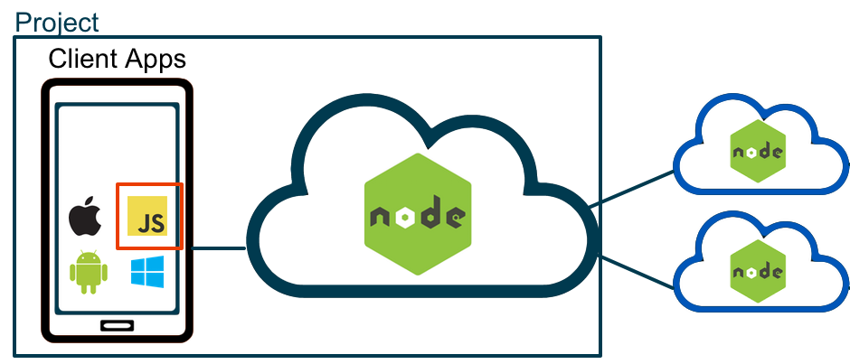
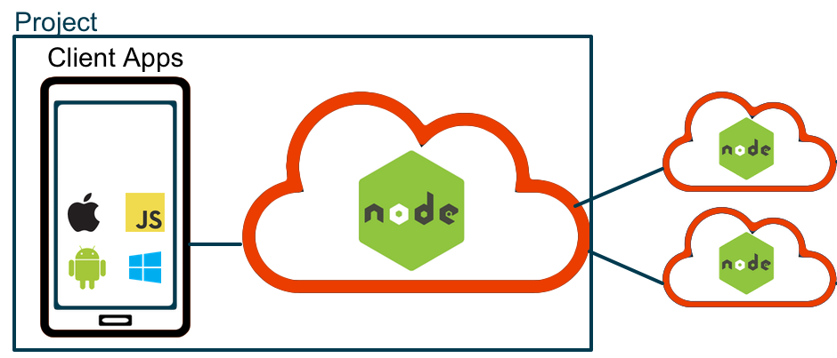

Red Hat Mobile Cheat Sheet
The Basics
The Red Hat Mobile Application Platform (RHMAP herein) categorises artifacts in the following tree structure:
Projects |---Client Apps: Anything which will be deployed on a mobile phone device |---Cloud Apps: Node.js microservices used for all logic specific to this project. Services & APIs: Re-usable node.js microservices to be used by multiple projects. Drag & Drop Apps (D&D herein): Forms-based rapid mobile app development functionality |---Forms: Develop forms with no coding needed. Forms get associated projects. |---Themes: Style D&D forms with an interactive theme builder. Themes get associated with projects.
Comparing Client Apps, Cloud Apps & Services
Client App |
Cloud App |
mBaaS Service |
|
|---|---|---|---|
|  |  |  | |
| Purpose | Building mobile phone apps | Project-specific serverside logic & APIs | Creating re-usable integrations for projects to consume |
| Programming language | Various (JS, ObjC, Java, Swift, ...) |
Node.js | Node.js |
| Runs on | Mobile phones | Server side | Server side |
| Project specific? | Yes | Yes | No Re-usable across projects |
| Storage |
|
|
|
Client SDKs & APIs
A client SDK exists for most major mobile platforms.
| Javascript | Android | iOS | .net | |
|---|---|---|---|---|
| Cordova, Appcelerator & other web | Objective C & Swift | Windows Phone, Xamarin | ||
| Build farm support | Yes | Yes | Yes | No |
| Dependency system | NPM (Usage optional) |
Gradle (Usage optional) |
Coccoapods (Usage optional) |
|
| Auto-init | Yes | No (Call $fh.init manually) | ||
| Config file |
www
|--fhconfig.json
|
$PROJECT
|--fhconfig.plist
|
assets
|--fhconfig.properties
|
$PROJECT
|--$PROJECT.Shared
|--fhconfig.json
|
Available APIs |
||||
| $fh.init Initialise the SDK |
Yes (But happens automatically) |
Yes | Yes | Yes |
| $fh.sync | Yes | Yes | Yes | Yes |
| $fh.cloud Call a cloud app |
Yes | Yes | Yes | Yes |
| $fh.push Register & respond to push notifications |
Yes | Yes | Yes | Yes |
| $fh.sec | Yes | No (Native alternatives exist) | ||
| $fh.hash | Yes | No (Native alternatives exist) | ||
| $fh.forms | Yes | No | No | No |
| $fh.auth | Yes | Yes | Yes | Yes |
JavaScript Client SDK
Here are the 3 most frequently used JavaScript client SDKs.
| Function | Code snippet |
|---|---|
| $fh.cloud |
|
| $fh.push | Remember to first set one, two, threein fhconfig.json. |
| $fh.sync |
Initialise the sync service - call this first.
shopping. The Options, Query Params and Metadata can just be empty objects {}, but they need to be provided in order.
|
Node.js Cloud & mBaaS Service SDK
 The Node.js SDK is published to NPM as fh-mbaas-api. You can include it in your apps by doingvar $fh = require('fh-mbaas-api');These calls will work in both Cloud Apps and mBaaS Services.
| Function | Code snippet |
|---|---|
| $fh.service |
Call another mBaaS Service. Can be used to call cloudapp-to-service, or service-to-service.
|
| $fh.cache |
Cache data in the redis key-value store.
|
| $fh.db |
Store data in the platform MongoDB. You can also use the MongoDB Node.js Driver directly, but depending on your version of the platform, you may need to "upgrade" your database. |